AI 进阶之路
探索、复盘与每一次的成长记录
教学卡片 1：基础环境破冰
任务画像 / Context
周期：12.26-12.28 | 目标：完成 AI 学习基础设施搭建。
行动清单 / Action
- 电脑端/手机端科学上网成功；
- 注册了谷歌账号，登录了谷歌邮箱，gemini，youtube，X等app；
- 对比测试了WinPC端与安卓移动端的注册机制，完整经历了Google账号的“注册-秒封-申诉-找回”全流程；
- 进行了Gemini免费会员领取的多种尝试，未成功，准备在长期失败后通过闲鱼购买“成品号”；
- 注册了谷歌账号，登录了谷歌邮箱，gemini，youtube，X等app；
- 对比测试了WinPC端与安卓移动端的注册机制，完整经历了Google账号的“注册-秒封-申诉-找回”全流程；
- 进行了Gemini免费会员领取的多种尝试，未成功，准备在长期失败后通过闲鱼购买“成品号”；
成果展示 / Show Time
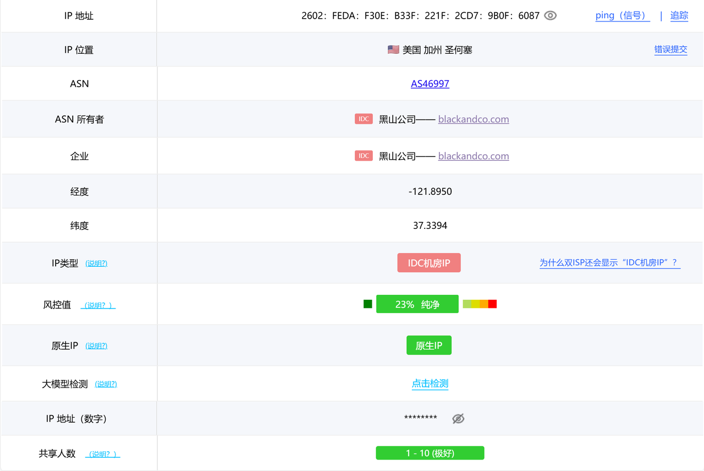
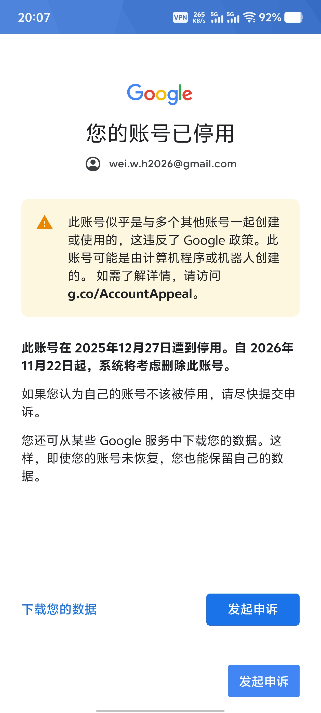
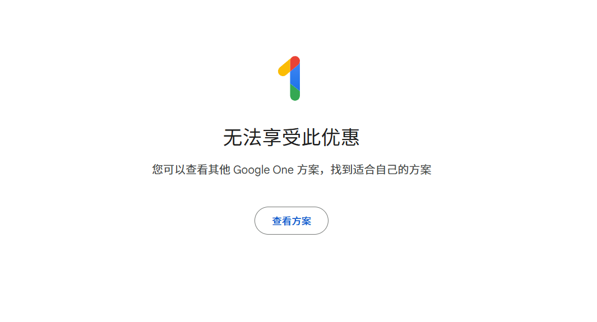
难点拆解 / Insight
稳定网络是基础。初期节点不稳定，通过更换优质节点解决访问限制。
教学卡片 2：交互艺术初探
任务画像 / Context
目标：掌握 Prompt Engineering 核心逻辑。
行动清单 / Action
- 用Google账号注册登录了 GitHub、X (Twitter)、YouTube ；
- 订阅 Andrej Karpathy、DeepLearningAI 等频道；
- 了解了各领域的主流ai工具，深度体验豆包等国产工具；
- 掌握了 提示词工程 的核心公式（角色+任务+约束），并实测了 Markdown（排版）与 JSON（结构化）的输出效果；
- 成功利用 AI 将文字指令转化为 Mermaid 流程图 代码，并在 Notion 中渲染成功；
- 订阅 Andrej Karpathy、DeepLearningAI 等频道；
- 了解了各领域的主流ai工具，深度体验豆包等国产工具；
- 掌握了 提示词工程 的核心公式（角色+任务+约束），并实测了 Markdown（排版）与 JSON（结构化）的输出效果；
- 成功利用 AI 将文字指令转化为 Mermaid 流程图 代码，并在 Notion 中渲染成功；
成果展示 / Show Time
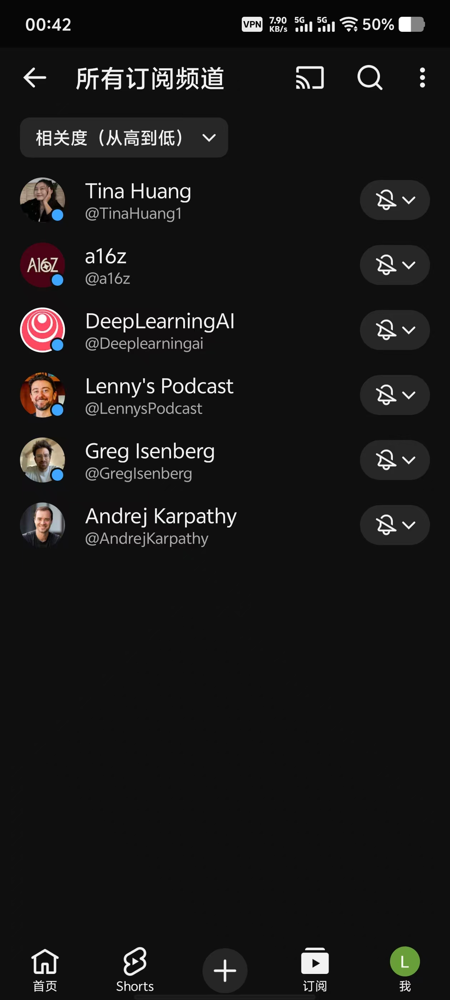
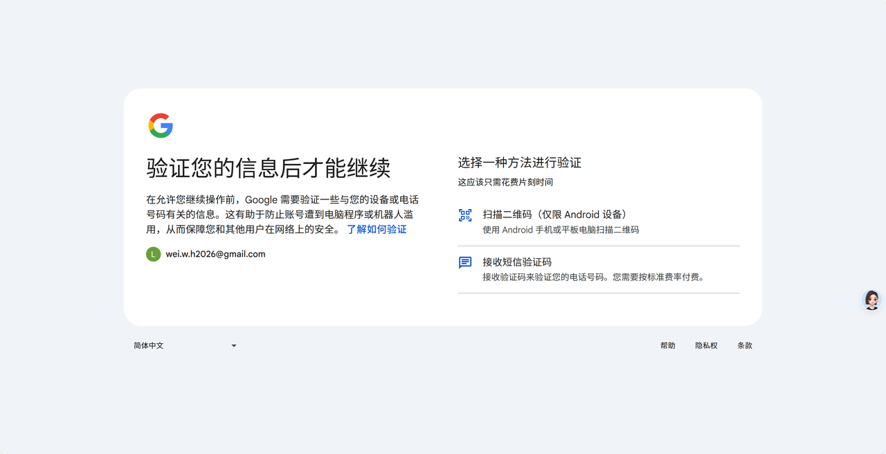

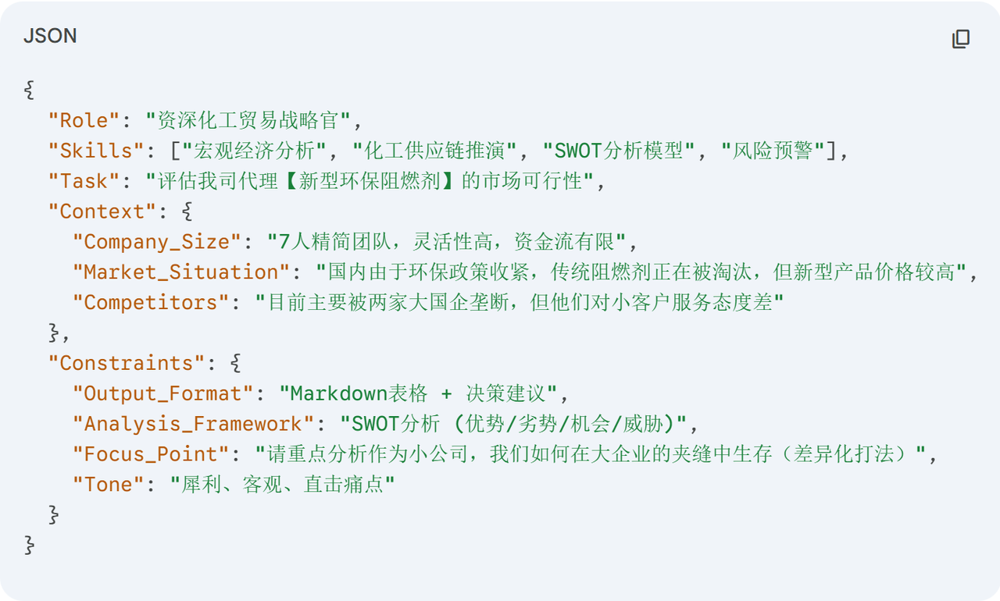
难点拆解 / Insight
提示词越具体，AI 的表现越专业。学会了结构化思维。
教学卡片 3：媒体生成实战
任务画像 / Context
周期：1.7 - 1.8 | 目标：探索文生图与视频。
行动清单 / Action
- 将女儿的线条涂鸦，利用Gemini/豆包润色为成熟的插画作品；
- 用海艺ai 生成IP“蓝白化工机器人”，并利用“图生图+固定风格提示词”，生成了风格统一的海报；
- 用可灵/海螺首尾帧技术制作了类似苹果广告的产品演示动画；
- 用豆包生成了自己的Q版形象；
- 用剪映克隆了自己的音色，配合AI生成的机器人，制作了短片；
- 用海艺ai 生成IP“蓝白化工机器人”，并利用“图生图+固定风格提示词”，生成了风格统一的海报；
- 用可灵/海螺首尾帧技术制作了类似苹果广告的产品演示动画；
- 用豆包生成了自己的Q版形象；
- 用剪映克隆了自己的音色，配合AI生成的机器人，制作了短片；
成果展示 / Show Time
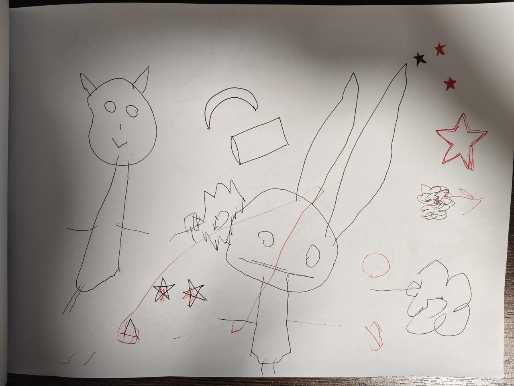
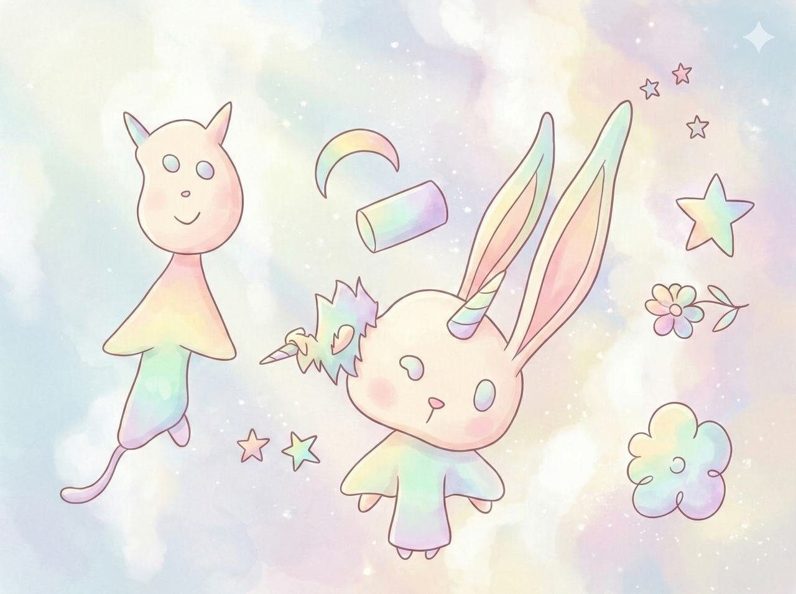

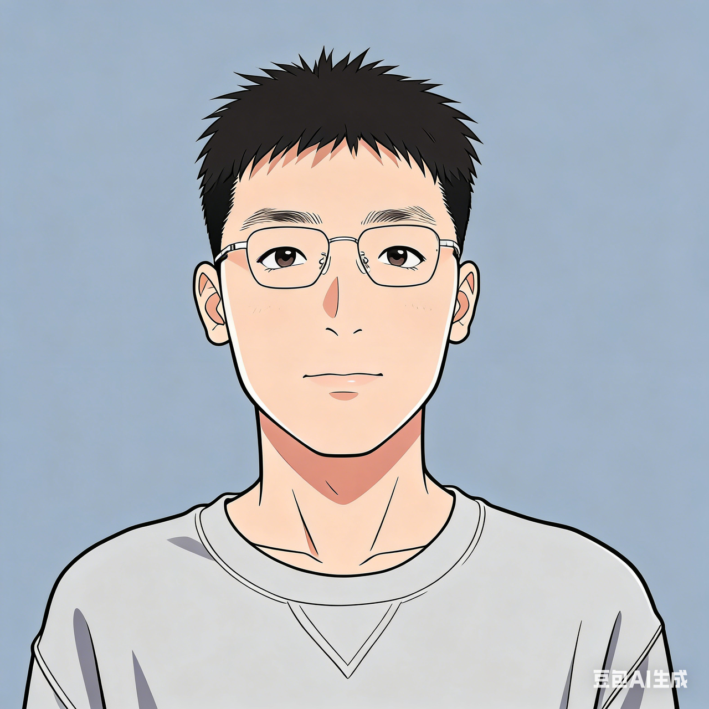
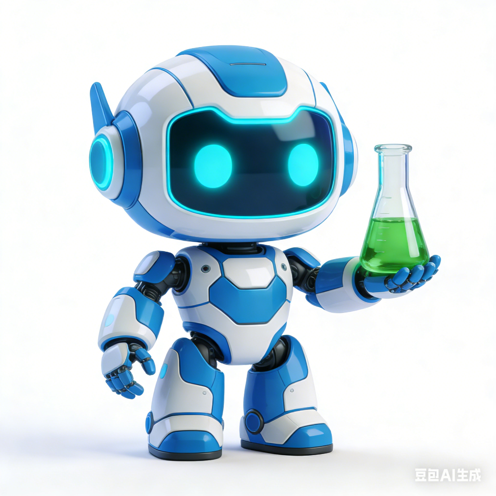
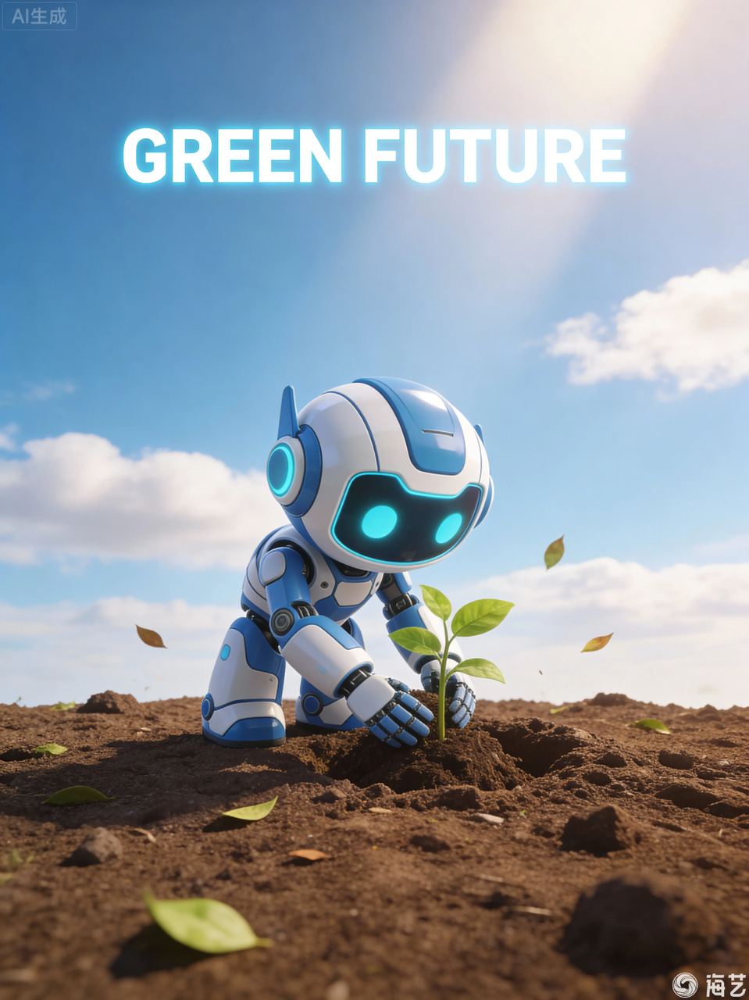
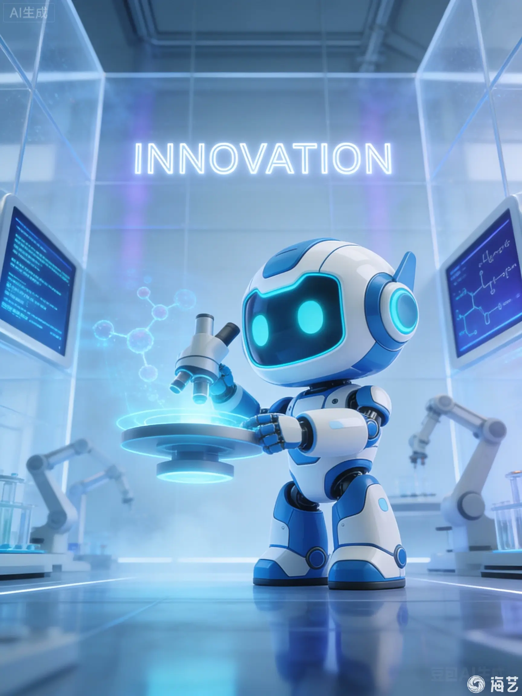

难点拆解 / Insight
生图中的细节控制是难点，待深入研究 Seed 值与角色固定技术。
教学卡片 4：开发者环境实战
任务画像 / Context
周期：1.8 - 1.16 | 目标：本地 AI 开发环境搭建。
行动清单 / Action
- GitHub 入门：完成登录、汉化、搜索、下载项目；
- VSCode 配置与运行：成功安装、切换中文、 Python 环境配置、ai助手配置，并成功运行github入门项目；
- vercel部署：成功将网站部署到vercel（my-ai-website-orpin.vercel.app）
- VSCode 配置与运行：成功安装、切换中文、 Python 环境配置、ai助手配置，并成功运行github入门项目；
- vercel部署：成功将网站部署到vercel（my-ai-website-orpin.vercel.app）
成果展示 / Show Time
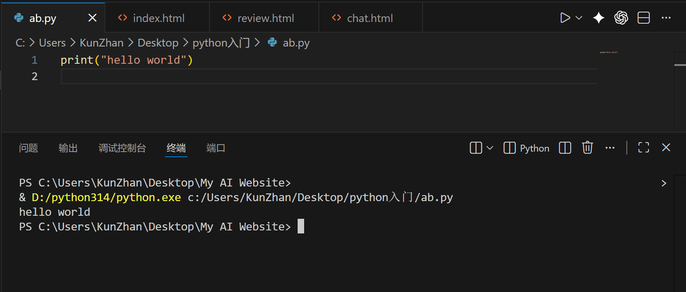

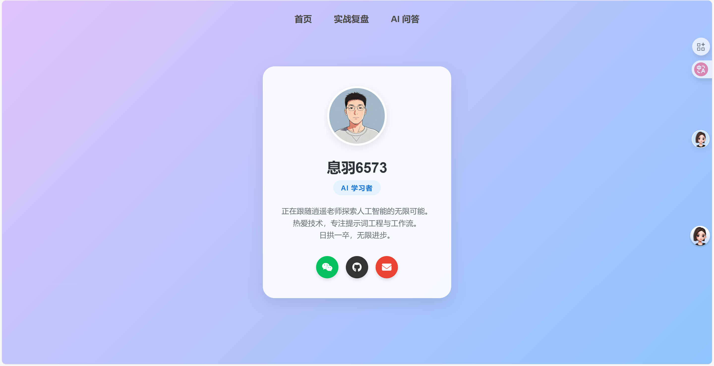
难点拆解 / Insight
解决插件登录的网络壁垒；通过
pip 快速修复依赖缺失，深刻感悟报错即成长。